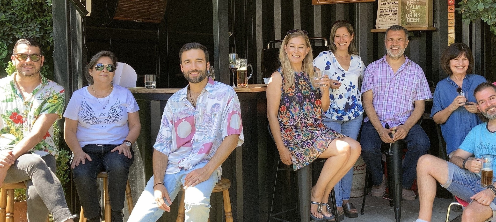
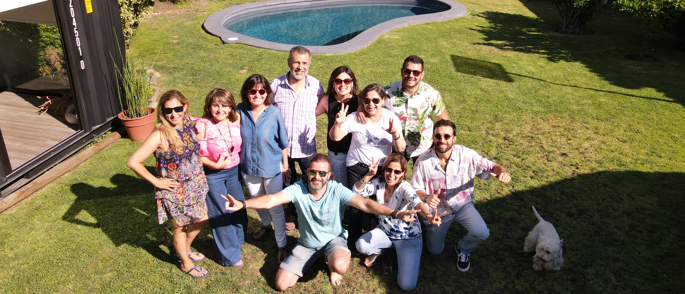

BIENVENIDO 2022
Desarrollamos espacios de escucha, de inspiración, de creatividad, de cercanía y de cuidado

¿QUE ES ACUMULAR TIEMPO PSICOLOGICO
Pensar a menudo en lo que ya pasó e identificarse con ese pasado.
Asi mismo, proyectarse compulsivamente al futuro anticipándose a lo que aun no pasa.
